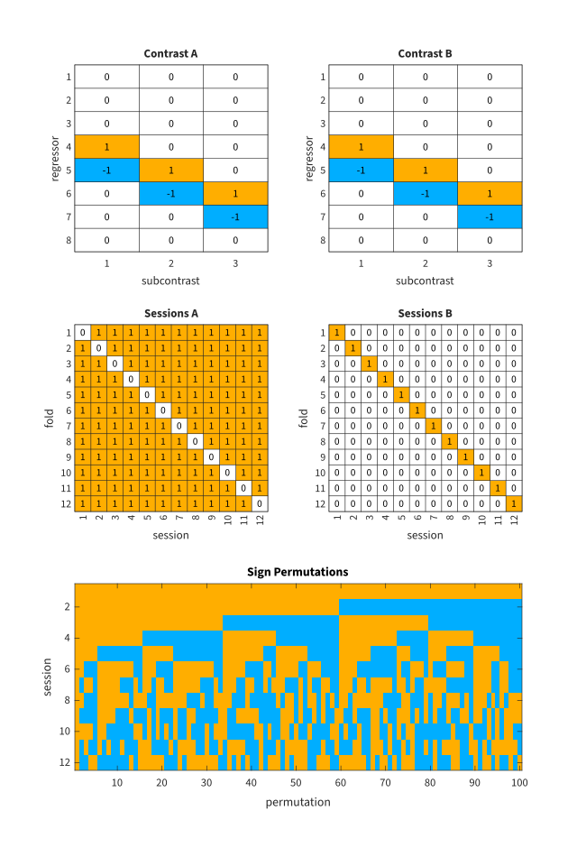

% select subject
sub = 'subj1';
% load information
load(fullfile(sub, 'info.mat'))
% directory with estimated model
modelDir = fullfile(sub, 'model');Cross-validated MANOVA
Pattern distinctness is computed in regions of interest and via searchlight
Define contrasts
We are looking at two effects:
- the ‘effect of category’, i.e. quantifying how much patterns associated with the eight different stimulus categories differ from each other and
- the ‘effect of category within inanimate object’, i.e. quantifying how much patterns associated with ‘bottle’, ‘scissors’, ‘shoe’, and ‘chair’ differ from each other.
The corresponding contrasts consist of 7 and 3 subcontrasts (columns), respectively, each of which targets the difference between two conditions.
C_stimulus = ...
[ 1 0 0 0 0 0 0 % face
-1 1 0 0 0 0 0 % house
0 -1 1 0 0 0 0 % cat
0 0 -1 1 0 0 0 % bottle
0 0 0 -1 1 0 0 % scissors
0 0 0 0 -1 1 0 % shoe
0 0 0 0 0 -1 1 % chair
0 0 0 0 0 0 -1 ]; % scrambledpix
C_object_category = ...
[ 0 0 0 % face
0 0 0 % house
0 0 0 % cat
1 0 0 % bottle
-1 1 0 % scissors
0 -1 1 % shoe
0 0 -1 % chair
0 0 0 ]; % scrambledpixNote that though the subcontrasts only combine neighboring conditions, the null hypothesis defined by all of them together says that there is no difference in the patterns associated with any of the involved conditions. For example for C_object_category, the three subcontrasts state
- pattern of ‘bottle’ = pattern of ‘scissors’,
- pattern of ‘scissors’ = pattern of ‘shoe’, and
- pattern of ‘shoe’ = pattern of ‘chair’.
If all three statements hold, that also implies that there is no difference e.g. between the pattern of ‘bottle’ and the pattern of ‘chair’. The result of cross-validated MANOVA, pattern distinctness D, estimates how much of the multivariate variance deviates from the null hypothesis encoded in a contrast.
Define analyses
An analysis is represented by an object of class Analysis. It comprises two contrasts, for ‘training’ (A) and ‘validation’ (B), but for cross-validated MANOVA the two are identical. It also defines a validation scheme which for each fold specifies which sessions are used for ‘training’ and ‘validation’. Here we use standard leave-one-session-out cross-validation, but more complex schemes can be defined.
analysis_stimulus = Analysis.leaveOneSessionOut(nSessions, C_stimulus)analysis_stimulus =
Analysis:
12 fold(s), 12 session(s)
CA = CB: 8 × 7, 7-dimensional
no permutations (besides neutral)analysis_object_category = Analysis.leaveOneSessionOut( ...
nSessions, C_object_category)analysis_object_category =
Analysis:
12 fold(s), 12 session(s)
CA = CB: 8 × 3, 3-dimensional
no permutations (besides neutral)By default no permutations are performed, but that can be requested explicitly. We here limit the number of permutations to 100, though a larger number is recommended if available.
rng(1837146515, 'twister')
analysis_object_category.addPermutations(maxPerms=100)2048 permutations possible
randomly selecting a subset of 100 permutationsIf the requested number of permutations (parameter maxPerms, default 1000) is larger than or equal to the number of possible permutations, all possible permutations are performed; if not, a subset is chosen randomly. For reproducibility of analyses it is advisable to explicitly initialize Matlab’s random number generator with rng. The arguments used here were originally chosen based on the fields Seed and Type from s = rng('shuffle').
As seen above, evaluating an Analysis object prints a brief summary. It can also be visualized using the method show:
analysis_object_category.show()

Below we need a cell array which contains all Analysis objects.
analyses = {analysis_stimulus, analysis_object_category};Run analyses on regions of interest
To perform region-of-interest analyses, use the function cvCrossManovaRegion. It
- loads the data via the
SPM.matfile inmodelDir, restricted to the voxels in the regions specified viaregions, - creates an object of class
CvCrossManovawhich includes the data, design matrices, and the specifiedanalyses, - and then runs the analyses on the regions and returns the results.
The output first reports on loading the data and then displays the created CvCrossManova object, including information on the contained analyses.
[Ds, ps] = cvCrossManovaRegion(modelDir, regions, analyses);
cvCrossManovaRegion
loading data via subj1/model/SPM.mat
volume of 40 × 64 × 64 = 163840 voxels
27638 voxels within brain mask
572 voxels within brain mask in subj1/mask4_vt.nii
21 voxels within brain mask in subj1/mask8b_face_vt.nii
225 voxels within brain mask in subj1/mask8b_house_vt.nii
572 voxels within brain mask in all regions
reading images from subj1/rbold.nii,????
1452 of 1452 volumes loaded
whitening
high-pass-filteringDot indexing is not supported for variables of this type.
Error in cvCrossManovaRegion (line 30)
nRegions = numel(misc.rmvi);The result ps is an array with the number of voxels in each region.
psUnrecognized function or variable 'ps'.The result Ds is a cell array with one row for each analysis, and one column for each region. For the first analysis each cell contains a scalar, which is the estimated value of D.
Ds(1, :)Unrecognized function or variable 'Ds'.Undefined variable 'Ds'.For the second analysis each cell contains an array with 100 elements, corresponding to the 100 permutations we requested. The first value is the actual estimated value of D, the others are permutation values.
Ds(2, :)Unrecognized function or variable 'Ds'.Undefined variable 'Ds'.Based on this, we can calculate a p-value for the null hypothesis ‘no effect of category within inanimate object’, in each region.
for i = 1 : numel(regions)
D = Ds{2, i};
pval = mean(D >= D(1));
fprintf('%-25s D = %.4f p = %g\n', regions{i}, D(1), pval)
endUndefined variable 'Ds'.The null hypothesis can be rejected in all three regions.
Run analyses with searchlight
To perform searchlight analyses, use the function cvCrossManovaSearchlight. It
- loads the data via the
SPM.matfile inmodelDir, - creates an object of class
CvCrossManovawhich includes the data, design matrices, and the specifiedanalyses, - and then runs the analyses on the voxels included in each searchlight.
The output first reports on loading the data and then displays the created CvCrossManova object, including information on the contained analyses.
slRadius = 3;
cvCrossManovaSearchlight(modelDir, slRadius, analyses) % FIXME
cvCrossManovaSearchlight
loading data via subj1/model/SPM.mat
volume of 40 × 64 × 64 = 163840 voxels
27638 voxels within brain mask
no region masks
reading images from subj1/rbold.nii,????
1452 of 1452 volumes loaded
whitening
high-pass-filtering
computing Cross-validated (Cross-) MANOVADot indexing is not supported for variables of this type.
Error in cvCrossManovaSearchlight (line 83)
cm = CvCrossManova(Ys, Xs, analyses, fs=misc.fs, lambda=lambda);Results are written to files in the model directory. ccmsParameters.mat is a record of the analysis parameters and VPSL.nii is an image file where each voxel contains the number of voxels of the searchlight centered on it.
dir(modelDir)
. .. RPV.nii ResMS.nii SPM.mat mask.nii
Files with names of the form spmD_A####_P####.nii are images of pattern distinctness, i.e each voxel contains the estimated value of D from the voxels of the searchlight centered on it. The digits #### after A identify the analysis, and the digits after P the permutation (if no permutations were requested, only P0001 for the neutral permutation).
We visualize sagittal slices of spmD_A0001_P0001.nii, i.e. the actual pattern distinctness from the first analysis.
% load data
[D, XYZ] = spm_read_vols(spm_vol(fullfile(modelDir, 'spmD_A0001_P0001.nii')));
% plot data
fig = figure();
% color map: parula, but black for NaN
cm = parula();
cm(1, :) = 0;
colormap(cm)
% color limits from data
cl = [min(D(:)), max(D(:))];
% sagittal slices
fig.Position(3:4) = [750, 1200];
tiledlayout(8, 5, Padding="tight", TileSpacing="tight")
for i = 3 : 39
nexttile
slice = squeeze(D(i, :, :)) .';
imagesc(slice)
clim(cl)
axis off image xy
end
cb = colorbar(Location='layout');
cb.Layout.Tile = 40;
cb.Label.String = 'D̂';
cb.TickDirection = 'out';Error using spm_vol>spm_vol_hdr
File "subj1/model/spmD_A0001_P0001.nii" does not exist.
Error in spm_vol (line 61)
v = spm_vol_hdr(deblank(P(i,:)));The largest values of D seem to be attained bilaterally in ventral temporal cortex, presumably the fusiform gyrus. Constrained (approximately) to the right and left hemispheres, the maximal values are:
x = reshape(XYZ(1, :), size(D));
Dright = D .* (x > 0);
maxDright = max(Dright(:))
x = reshape(XYZ(1, :), size(D));
Dleft = D .* (x < 0);
maxDleft = max(Dleft(:))Unrecognized function or variable 'XYZ'.Interpretation of pattern distinctness
The method of Cross-validated MANOVA estimates pattern distinctness D, which is defined as the amount of multivariate variance of the data explained by the effect encoded in the contrast, in units of the multivariate error variance. As such, D is a number larger or equal to zero, but without upper limit.
In the region-of-interest analyses above, we found a maximum value of D = 5.3228 for analysis 1 in region 1. This value is quite large, but it has to be interpreted relative to the contrast, which targeted the very broad ‘effect of category’ for both visually and semantically very different categories. Moreover, D accumulates across voxels (not exactly additively, but depending on the error correlation between voxels), and it is therefore larger for larger sets of voxels. In this case, region 1 (‘all ventral temporal object-selective cortex’) included 572 voxels. By comparison, the same analysis resulted in D = 0.36733 in the region 2 (‘region maximally responsive to faces’), which at 21 voxels is much smaller, and the searchlight of 123 voxels resulted in a maximum D of 2.1622.
Given that D is nonnegative, it may be surprising that the color bar for the slices from the searchlight analysis starts below zero, and indeed for analysis 1 D attained values from −0.1357 to 2.1622. The explanation is that the method can only provide a statistical estimate of D, more precisely denoted D̂. The estimator is designed to be unbiased, which means the estimates can be both larger and smaller than the actual value, and therefore an estimate can be negative if the actual value is close to zero. Such values should be disregarded since they can never be significantly different from zero.